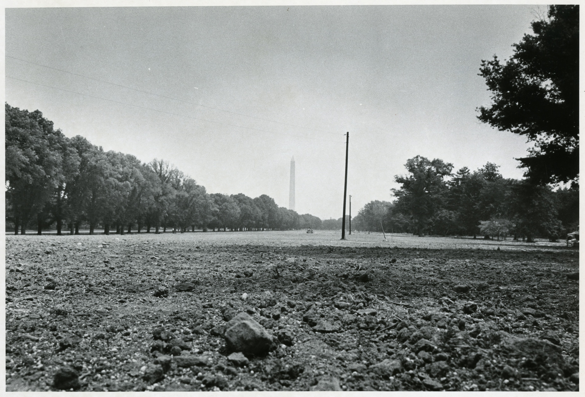

How do we remember what is not there? Remembering and preserving histories of protest is an ongoing act of resistance. When Resurrection City was deconstructed, the legacy of the Poor People's Campaign carried on, but no longer in the physical embodiment of a functioning city.
Use the digital map and archival photo slider below to reflect upon the lasting impact of Resurrection City and how knowing its history can impact your understanding on the present-day cultural landscape.
Add your comments, experiences, memories, or questions directly on the map here.
Click the 'Post' icon in the bottom right-hand corner of page. Search by name/address OR drag the box onto the desired plot point to add an entry to the map.
Add a title to your entry, and have the option to include images, notes, files, links, audio, and/or video recordings.
City Hall was an important base of operations: a centrally-located, well-constructed shelter with electricity and phone access where residents could organize for daily marches and lobbying efforts. Although much of the SCLC senior staff, including Abernathy, lived offsite at the nearby Pitt Motel, they spent most of their time onsite in City Hall.
City Hall represents a specific structure within Resurrection City which speaks to the site's broader use as a gathering space for civil rights. What's in a building? What can a place of civic decision-making feel like when designed for citizens, by citizens - even if just a temporary structure?
On June 19th, 1968, over 50,000 people gathered in solidarity for working-class rights, culminating in a mass demonstration with songs, speakers, and prayer. This event was the peak of Resurrection City, helping promote the causes behind the movement and bring together civil rights activists and neighbors from across the country. A few days later, police flooded the settlement with tear gas, commencing the abandonment of the area and eventual deconstruction of the encampment.
Solidarity Day represents moment in space and time that highlights the culmination of labor, organizing, and visibility of Resurrection City within the built environment. The National Mall has been host to many protests, like Martin Luther King's March on Washington in 1963. What made Solidarity Day different? How did the settlement of Resurrection City create momentum for public demonstration and community organizing?